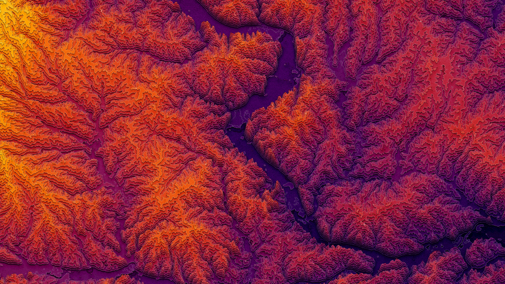

Click the map to change or remove selection.

Extending from the previous project, taking control of Calcite Components, this project
takes control of the drawing of a map widget, restricting the map from being able to zoom, pan or scale.
This enables for a more focused experience, allowing for cartography decisions to be made manually, but also
keeps the functionality of being able to interact with a dynamic map.
This project focuses on the use of the hover effect, using hitTest() to watch the pointer to see what
feature is being hovered. This enables the webpage to dynamically query the features very rapidly. The
charts throughout the page are using the Charts.js library, which is a robust and lightweight library for
creating dynamic charts.
The use of population statistics in this project is a way to show that a very high number of fields can be
queried and displayed at the same time, without sacrificing performance. The most interesting of the charts
is likely the population pyramid on the right side of the screen. Exploring the population pyramids of
primarily Rural vs Urban counties, and viewing the relationship between age statistics, male vs female
population, and racial makeup is a good proof of concept for using dynamic charts on ArcGIS map elements.